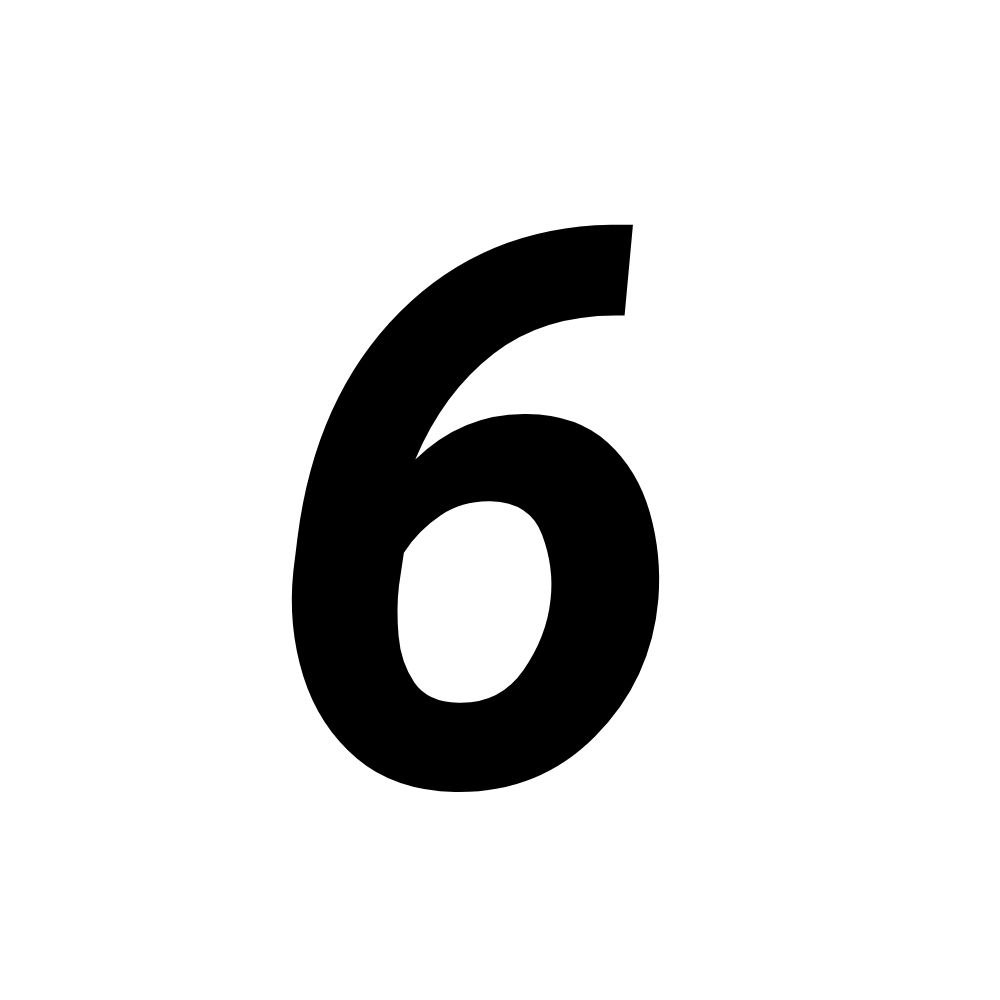

Как вы уже знаете, существует всего 7 нот
В стандартном строе гитары далеко не такие ноты как вы думаете.
Изначальн может показаться, что открытые струны имеют ту же последовательность, что и на нотном стане, то-есть До, Ре, Ми, Фа, Соль, Ля, Си
Однако, это далеко не так. Для начала стоит разобраться в нумерации струн. Первая струна - самая маленькая, а шестая - самая толстая.
Одной проблемой меньше. Теперь стоит разобраться, какие ноты звучат, при щипке открытой струны?
И так, мы будем считать от первой (маленькой) струны, до шестой (большой) струны. Это не так сложно запоминть, достаточно выучить последовательность: Ми, Си, Соль, Ре, Ля, Ми
То-есть, первая струна - Ми, вторая - Си, третья - Соль, четвертая - Ре, пятая - Ля, и шестая - Ми

Ми
Си
Соль
Ре
Ля
Ми
материалы рекомендуется записывать , для лучшей продуктивности
Начать